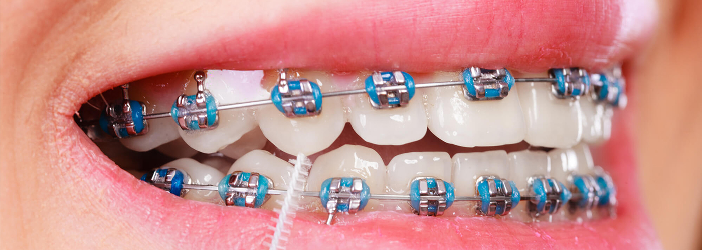

Aparelhos Estéticos
O uso de aparelhos ortodônticos deixou de ser um tabu para a sociedade, fazendo com que a sua busca seja cada vez maior, inclusive é muito procurado por pessoas de idade mais avançada. E como tudo vem se repaginando com novas tecnologias para facilitar a vida das pessoas, também não poderia ser diferente.
Existem vários tipos de aparelhos estéticos. Eles se dividem entre os modelos de policarbonato, porcelana e fixo convecional . A seguir, conheça as diferenças entre cada um deles:

Têm uma ótima apresentação, é o campeão entre os três no quesito discrição, uma vez que suas peças são confeccionadas com porcelana monocristalina e, por isso, parecem-se com vidro.
O aparelho de porcelana apresenta uma cor branca leitosa, seus braquetes são menores do que os do modelo de policarbonato e mais resistentes. Porém, seu custo é mais alto do que o fixo de policarbonato. Uma das principais vantagens é que suas pecinhas não mudam de cor com o passar do tempo, quesito que agrada a muitos pacientes e facilita a aceitação da imagem visual. Esse modelo é uma variação do Aparelho Fixo Convencional, e foi um dos primeiros modelos a chegar ao mercado.
O aparelho de policarbonato é confeccionado com uma resina plástica. Seus braquetes são maiores do que os dos outros modelos estéticos, e menos resistentes, suas peças têm a cor branca o que contrasta com a cor dos dentes, ficando mais visível quando comparado aos outros modelos.